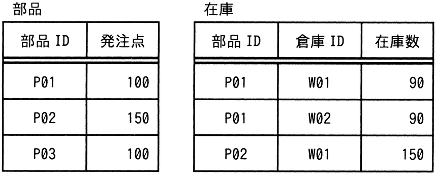
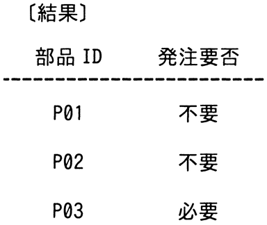

“部品”表及び“在庫”表に対し，SQL文を実行して結果を得た。SQL文のaに入れる字句はどれか。


〔SQL文〕
SELECT 部品.部品 ID AS 部品 ID,
CASE WHEN 部品.発注点 > a
THEN N'必要' ELSE N'不要' END AS 発注要否
FROM 部品 LEFT OUTER JOIN 在庫
ON 部品.部品 ID = 在庫.部品 ID
GROUP BY 部品.部品 ID, 部品.発注点
ア
COALESCE（MIN（在庫.在庫数）, 0）
イ
COALESCE（MIN（在庫.在庫数）, NULL）
ウ
COALESCE（SUM（在庫.在庫数）, 0）
エ
COALESCE（SUM（在庫.在庫数）, NULL）